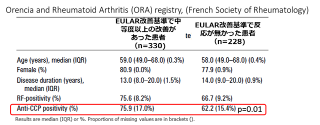

対オレンシア②セロポジ
オレンシアは有効例ではセロポジ率が有意に高い（ORA registry）
ORA registry：
フランスの実臨床下のRA患者のレジストリー
RF/ACPA別のオレンシアの有効性も検討している
全体の結果
| EULAR response （n=558） |
割合 |
|---|---|
| Good | 20.4% |
| Moderate | 38.7% |
| No | 40.9% |
この中でセロポジ・セロネガで分けた結果


EULAR responseが得られた患者ではセロポジ率が有意に高いという報告だが、non-responderが全体の41%（228/558人）もいる